Native built-source browser renders. Background-only mode hides real foreground surfaces as well as text. Natural card occlusion remains visible in the normal view. Click any image to open its native file.
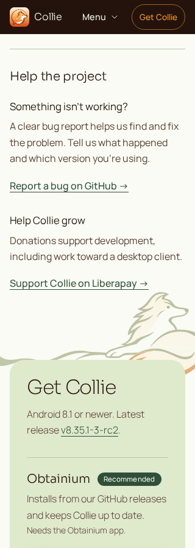
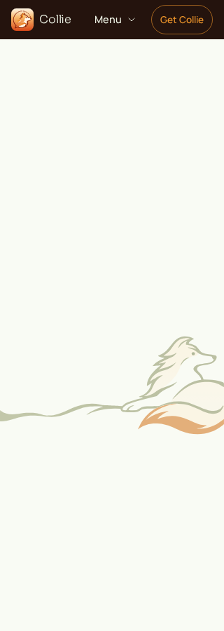
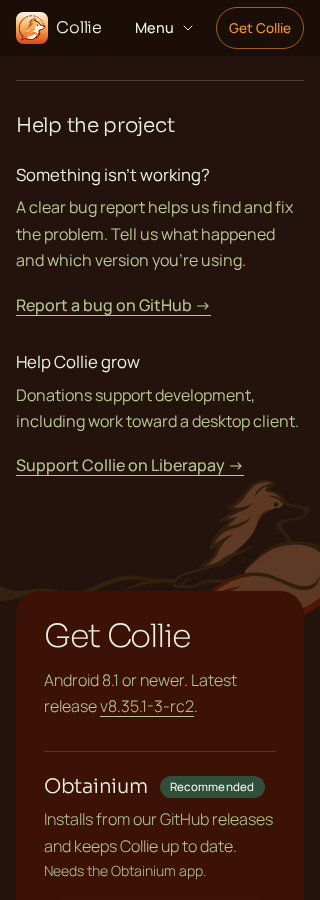
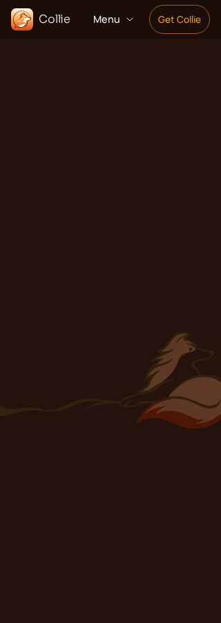
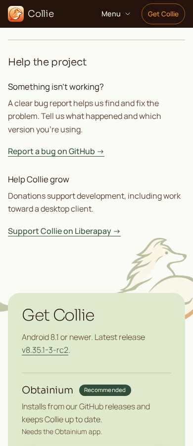
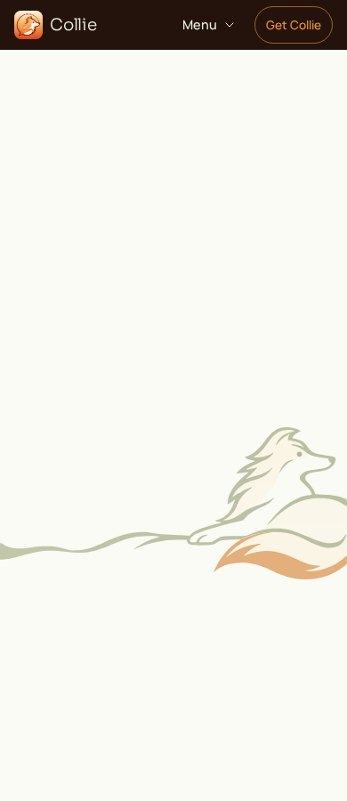
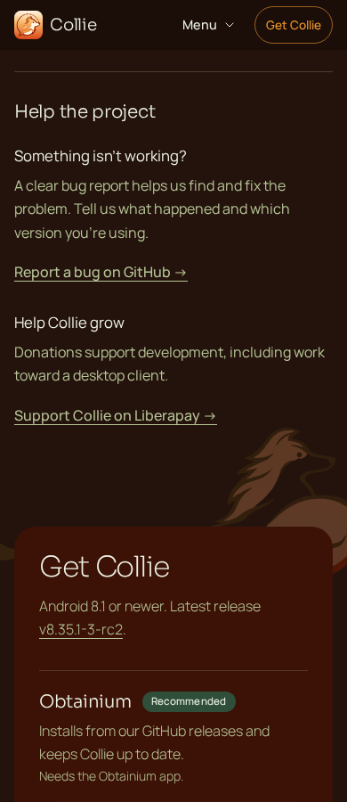
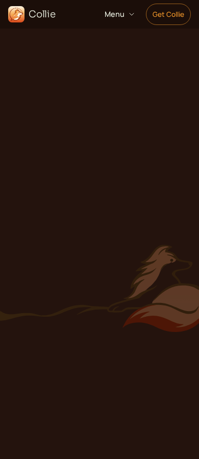
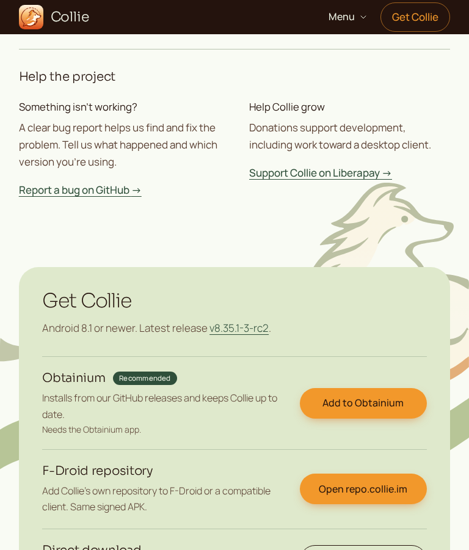
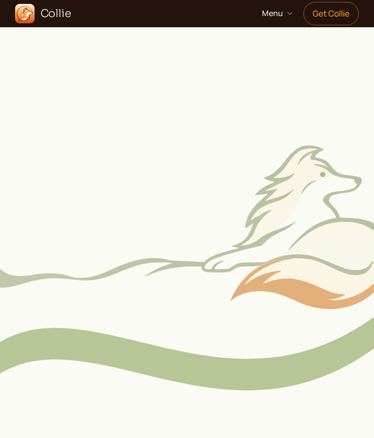
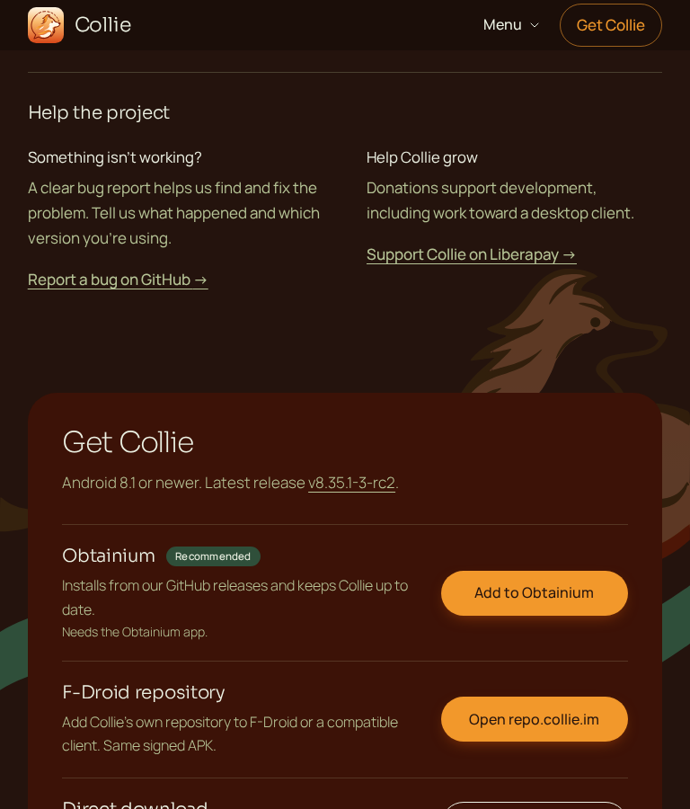
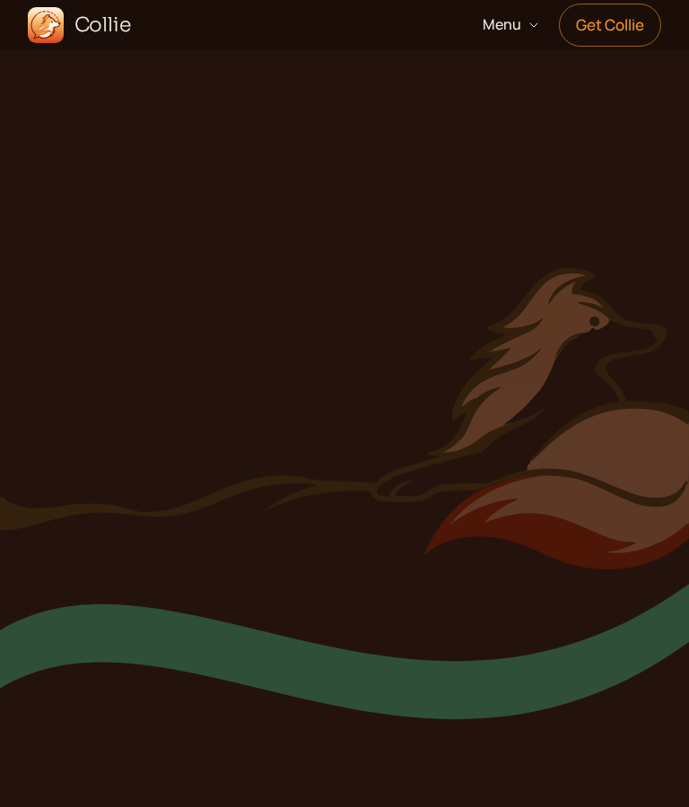
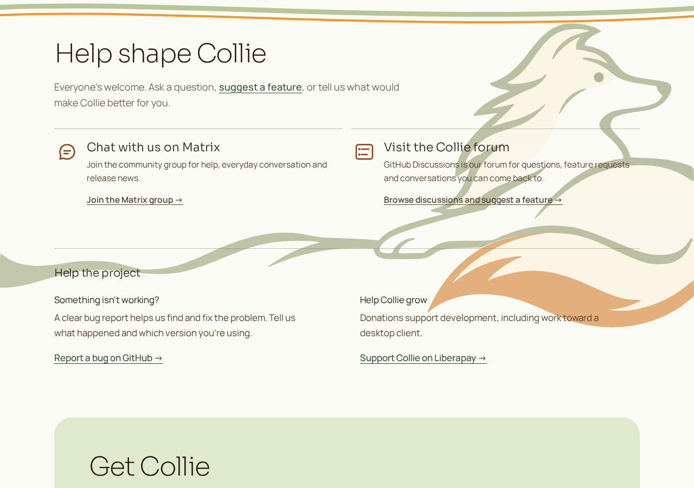
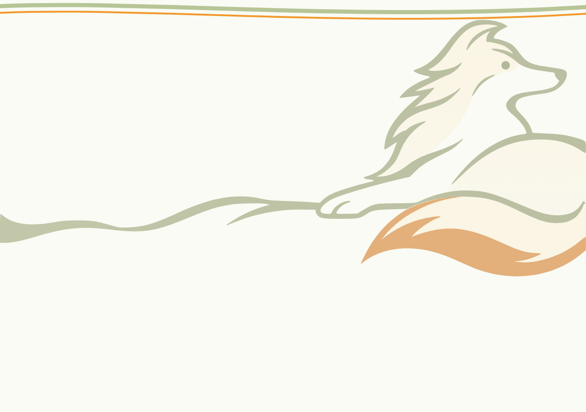
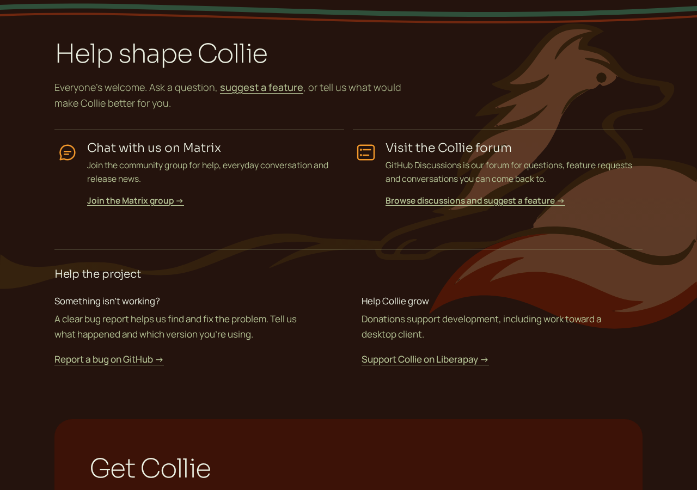
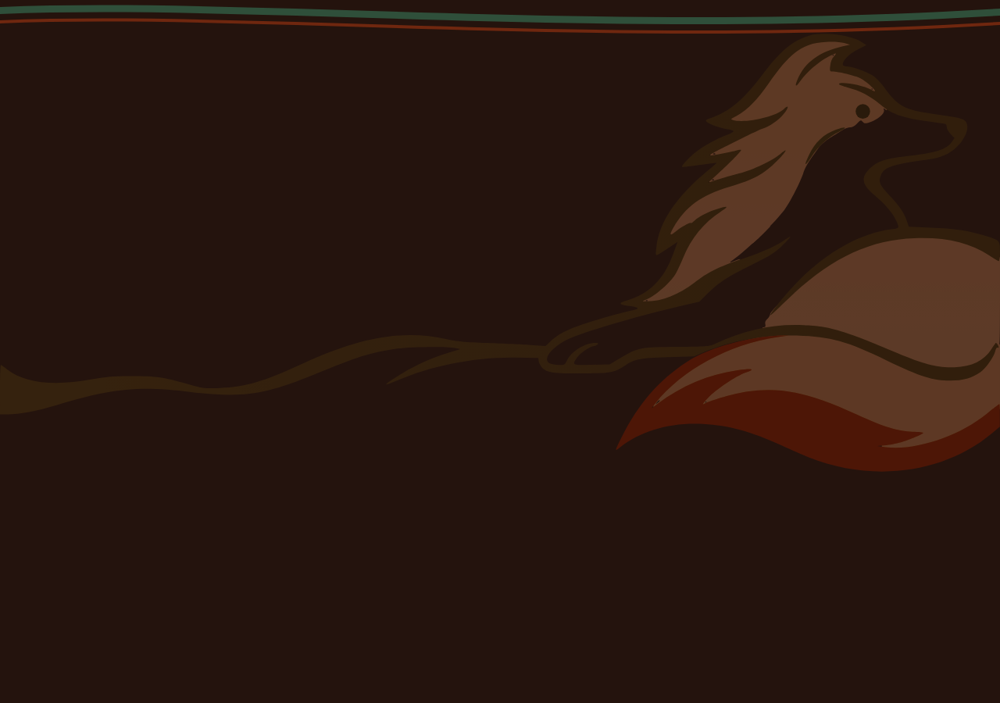
The unchanged SVG uses viewBox 0 1008 770 341. The registered source comparison separately uses 770 × 350 at source origin (0,1000).
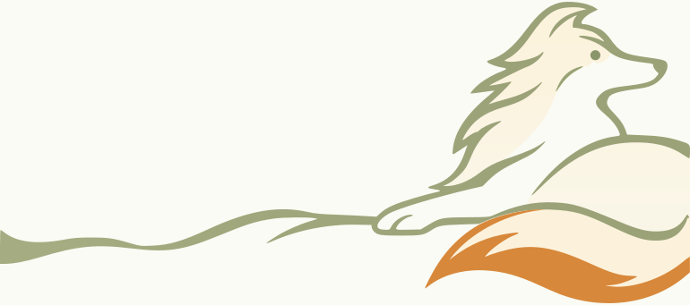
Open registered study and raw SVG